Postdoctoral researcher
Psychometrics · Experimental Psychology
Open & Collaborative Science
Title: Be(a)ware of Validity: Inferences and Measures in Unconscious Processing Research
Supervisor: Miguel A. Vadillo
Sobresaliente Cum Laude with International Mention (June 2026)
📍 Department of Basic Psychology, Universidad Autónoma de Madrid (Spain)
MSc Thesis: Factor Analysis under Range Restriction: A Simulation Study (10/10 with Honors)
GPA: 9.72/10
📍 Universidad Autónoma de Madrid (Spain)
📍 Universidad Complutense de Madrid (Spain)
BSc Thesis: ¿Todos, todos/as, todxs o todes?: Effects of masculine and alternative generics on group expectations and self-efficacy perception in Spanish. (10/10 with Honors)
GPA: 8.55/10
📍 Universidad Autónoma de Madrid (Spain)
Erasmus+ (4 months)
📍 Tilburg School of Social and Behavioral Sciences; Tilburg Universiteit (The Netherlands)
•Postdoctoral researcher
📍 Universidad Autónoma de Madrid (Spain)
Cognitive, Attention, and Learning Lab (CALL 🔗)
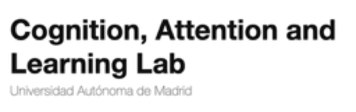
•Principal Investigator (PI)
of a Center for Open Science project ($37.679,75): 19 labs, 13 countries
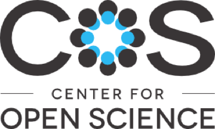
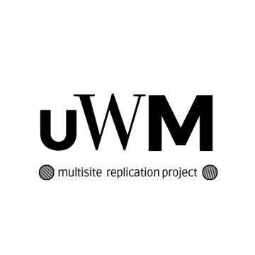
•FPI Predoctoral Researcher
📍 Universidad Autónoma de Madrid (Spain)
Cognitive, Attention, and Learning Lab (CALL 🔗)
•Research Assistant
📍 Universidad Autónoma de Madrid (Spain)
Cognitive, Attention, and Learning Lab (CALL 🔗)
•Curricular internship
Psyma Ibérica, Market Research and Consumer Insights
📍 Madrid, Spain
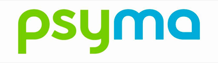
•External internship
Survey Team, Unit for Quality of Studies
📍 UAM, Spain
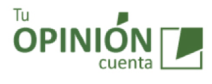
•Research Collaborator
📍 Tilburg School of Social and Behavioral Sciences (NL)
•Research visit – 3 months
Supervised by Makiko Sadakata
📍 ILLC, Universiteit van Amsterdam (The Netherlands)
•PhD visit – 3 months
Supervised by David R. Shanks
📍 Psychology & Language Sciences, University College London (UK)
•Replicating the unconscious working memory effect: a multisite preregistered study
Center for Open Science (COS) & Templeton World Charity Foundation
Principal Investigator
Funding: $37.679,75
Multisite Registered Report: 19 labs, 13 countries, 44 collaborators
•Let’s ROC: Una generalización de la Teoría de Detección de Señales para el estudio de los procesos mentales inconscientes
Agencia Estatal de Investigación (AEI)
Research team member · PI: Miguel A. Vadillo
•Meta-sesgos en la investigación psicológica
Agencia Estatal de Investigación (AEI)
Research staff · PI: Miguel A. Vadillo
•Deconstruyendo la automaticidad
Agencia Estatal de Investigación (AEI) · PID2020-118583GB-I00
Research team member (FPI predoctoral contract) · PI: Miguel A. Vadillo
•Problemas metodológicos en la investigación sobre cognición implícita
Fundación Madri+d · Talent Attraction Programme, Comunidad de Madrid
Research assistant · PI: Miguel A. Vadillo
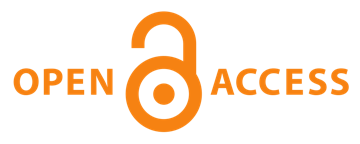
PreregisteredOpen dataOpen materialsOpen code•Rey-Sáez, R., Franco-Martínez, A., Revuelta, J. & Vadillo, M. A.
A Unified Framework for Psychometrics in Experimental Psychology: The Standardized Generalized Hierarchical Factor Model
📰Psychological Methods. doi: 10.1037/met0000846
•Franco-Martínez, A., & Vadillo, M. A.
A Gentle Push Toward Leading Your First Multisite Registered Report: Resources and Recommendations from an Early-Career Coordinator.
📰Collabra: Psychology, 12(1): 159983. doi: 10.1525/collabra.159983
•Franco-Martínez, A., Rey-Sáez, R., [...] Shanks, D., Soto, D., & Vadillo, M. A.
Replicating the Unconscious Working Memory Effect: A Multisite Registered Report.
📰Neuroscience of Consciousness, 2026(1), niaf046. doi: 10.1093/nc/niaf046
•Franco-Martínez, A., Vicente-Conesa, F., Shanks, D., & Vadillo, M. A.
Measurement and sampling noise undermine inferences about awareness in location probability learning: A modeling approach.
📰Journal of Memory and Language, 143, 104621. doi: 10.1016/j.jml.2025.104621
•Franco-Martínez, A., Alvarado, J. M., & Sorrel, M. A.
Range Restriction Affects Factor Analysis: Normality, Estimation, Fit, Loadings, and Reliability.
📰Educational and Psychological Measurement, 83(2), 262–293. doi: 10.1177/00131644221081867
•Revuelta, J., Franco-Martínez, A., & Ximénez, C.
Nominal factor analysis of situational judgment tests: Evaluation of latent dimensionality and factorial invariance.
📰Educational and Psychological Measurement, 81(6), 1054–1088. doi: 10.1177/0013164421994321
•Franco-Martínez, A., […] Garre-Frutos, F.
Choose your own PAS? Quantitative and Qualitative Validity Evidence for the Perceptual Awareness Scale
📰Behavior Research Methods. (2nd round) doi of the preprint: 10.31234/osf.io/n7zuw_v2
•Franco-Martínez, A., Garre-Frutos, F., & Tomás, G.
Measuring Creativity Process and Product with a Digitized Invented Alien Creatures Task
📰PsyArXiv doi: 10.31234/osf.io/xkaw6_v1
•Franco-Martínez, A., Rey-Sáez, R., & Castillejo, I.
The Seven Wonderings of Large Language Models as Psychometric Designers, Refiners, and Analysts
📰PsyArXiv doi: 10.31234/osf.io/kmqy5
•Rey-Sáez, R., Franco-Martínez, A., Vadillo, M. A., & Garre-Frutos, F.
A multilevel signal detection approach to unconscious processing research.
•Franco-Martínez, A., Ondé, D., & Alvarado, J. M.
On the nature of group factors in bifactor structures.
📖Proceedings from the 9th European Congress of Methodology (pp. 154–159). Publicacions de la Universitat de València. doi: 10.7203/PUV-OA-438-5
ISBN: 978-84-9133-438-5
•Franco Martínez, A.
¿Todos, todos/as, todxs o todes? Efectos cognitivos del uso del genérico masculino y sus formas alternativas en español.
📖Maricorners. Investigaciones queer en la Academia (pp. 25–56).
Egales editorial. ISBN: 978-84-17319-76-2
•SIPS Commendation
Society for the Improvement of Psychological Science (SIPS)
A gentle push toward leading your first multisite study (with M. A. Vadillo)
•SIPS Commendation
Society for the Improvement of Psychological Science (SIPS)
Psicometríes - Science communication project (with R. Rey-Sáez & I. Castillejo)
•Participatory Budgeting Funding
Facultad de Psicología, Universidad Autónoma de Madrid
Documentary “Pacience for Science”.
Funding: €140
•Young Researchers Award, AEMCCO
Spanish Association of Methodology for the Behavioural Sciences
¿“El aprendizaje probabilístico es inconsciente”? Modelando mucho ruido y poca muestra.
Award: €1,000
•AEMCCO Award for Science Communication and Knowledge Transfer in Methodology
Spanish Association of Methodology for the Behavioural Sciences
Ecuación Triunfo - Streaming contest for disseminating psychology research methods
Award: €700, accommodation, and travel expenses to the 2024 AEMCCO Conference in Seville
•Three Minute Thesis Award, Internal UAM Round
Universidad Autónoma de Madrid
Validez de los métodos para inferir consciencia en procesos psicológicos básicos
Award: €100
•Student Activities Grant
Universidad Autónoma de Madrid
Espacio Predoc - A support group for PhD students
Funding awarded: €500
•Student Activities Grant
Universidad Autónoma de Madrid
Ecuación Triunfo - Streaming contest for disseminating psychology research methods
Funding awarded: €700
•XI Isidoro Delclaux Research Award in Psychology for Best MSc Thesis
Faculty of Psychology, Universidad Autónoma de Madrid
La restricción del rango afecta al análisis factorial
Award: €500
•Competitive Predoctoral Fellowship (FPI 2021)
Spanish Ministry of Science and Innovation / State Research Agency (AEI)
Deconstruyendo la automaticidad - REF: PRE2021-097654
•Best Poster Award
X Conference of Ibero-American Association for the Study of Individual Differences (AIIDI)
Validando el Big Five: ¿factorial y/o redes psicométricas?
Award: Manual of the Matrices Test, TEA Ediciones
•XV SEPEX & II Joint SEPEX-BAPS Meeting 📍Valencia, Spain
○Franco-Martínez, A., Ferrer-Mendieta, A., Peiro-Lanchares, C., Vadillo, M. A., & Garre-Frutos, F.
What do we mean by “Validity” in experimental measures? An Illustrative Study with the Perceptual Awareness Scale (PAS)
○Garre-Frutos, F., Franco-Martínez, A., Vadillo, M. A., & Rey-Sáez, R.
A multilevel-signal detection framework for unconscious processing research
○Rey-Sáez, R., Franco-Martínez, A., Revuelta, J., & Vadillo, M. A.
Don’t Aggregate-then-Correlate, Model! Unleashing the Power of Generalized Hierarchical Factor Models in Experimental Psychology
○Franco-Martínez, A., Garre-Frutos, F., & Tomás, G.
Measuring Creativity Process and Product with a Digitized Invented Alien Creatures Task
•XIX Congress of Methodology (AEMCCO) 📍Almería, Spain
○Franco-Martínez, A., Rey-Sáez, R., Revuelta, J., & Vadillo, M. A.
When Factor Analysis Started Answering Questions in Experimental Psychology
•SIPS Meeting 📍VIRTUAL
•15th International Conference on Multilevel Analysis 📍Utrecht, The Netherlands
○Franco-Martínez, A., Rey-Sáez, R., & Vadillo, M. A.
How do I start planning my multisite project? A tutorial on multilevel simulation-based power and sensitivity analysis 🔗
○Rey-Sáez, R., Franco-Martínez, A., & Vadillo, M. A.
A Multilevel Psychometric Framework for Experimental Tasks: The Generalized Hierarchical Factor Model
•XIV Meeting of the AIIDI 📍Madrid, Spain
○Franco-Martínez, A., Rey-Sáez, R., Soto, D., Shanks, D., & Vadillo, M. A.
Counterintuitive: Self-Reported Intuition in a Questionnaire Fails to Predict Behavioral Intuition
○Rey-Sáez, R., Franco-Martínez, A., & Vadillo, M. A.
New Hierarchical Models to Answer Old Psychometric Questions in Experimental Research: Which Task Best Measures Inhibition? [Best Oral Communication Award]
•XI Conference of the European Association of Methodology 📍Tenerife, Spain
○Franco-Martínez, A., Ferrer-Mendieta, A., Peiro-Lanchares, C., Vadillo, M. A. & Garre-Frutos, F.
Choose Your Own PAS? Studying the Validity of the Perceptual Awareness Scale 🔗
•28th Annual Meeting of the ASSC 📍Heraklion, Greece
○Franco-Martínez, A., Rey-Sáez, R., Soto, D., Shanks, D., & Vadillo, M. A.
Replicating the Unconscious Working Memory Effect: A Multisite Preregistered Study 🔗
○Rey-Sáez, R., Garre-Frutos, F., Franco-Martínez, A., Castillejo, I., & Vadillo, M. A.
Addressing Methodological Challenges in Unconscious Process Research: A Hierarchical Modeling Approach
•14th Scientific Meeting on Attention (RECA) 📍Madrid, Spain
○Franco-Martínez, A., Rey-Sáez, R., Soto, D., Shanks, D., & Vadillo, M. A.
Measurement and Sampling Noise Compromise Inferences About Unconsciousness in Probabilistic Learning: A Modeling Approach
○Ferrer-Mendieta, A., Peiro-Lanchares, C., & Franco-Martínez, A.
What About the PAS?
•XVIII Congress of Methodology (AEMCCO) 📍Seville, Spain
○Franco-Martínez, A., Vicente-Conesa, F., Shanks, D. R., & Vadillo, M. A.
“Probabilistic Learning is Unconscious”? Modeling High Noise and Small Samples
○Rujano, A., & Franco-Martínez, A.
How to Explain Psychometrics to a Non-Psychologist Audience?
•27th Annual Meeting of the ASSC 📍Tokyo, Japan
○Franco-Martínez, A., Rey-Sáez, R., Soto, D., Shanks, D., & Vadillo, M. A.
Advances in “Replicating the Unconscious Working Memory Effect: A Multisite Preregistered Study” 🔗
○Rey-Sáez, R., Franco-Martínez, A., Castillejo, I., & Vadillo, M. A.
From Unconscious to Unreliable? Measurement Error Biases Evidence on Studies of Unconscious Processing
•Experimental Psychology Society (EPS) Annual Meeting 📍London, UK
○Franco-Martínez, A., Shanks, D., & Vadillo, M. A.
Modeling Visual Search and Awareness in the Additional Singleton Task 🔗
•26th Annual Meeting of the ASSC 📍New York, USA
○Franco-Martínez, A., Soto, D., Shanks, D., & Vadillo, M. A.
Replicating the Unconscious Working Memory Effect: A Preregistered Multisite Study 🔗
•XVII Congress of Methodology (AEMCCO) 📍Teruel, Spain
○Franco-Martínez, A.
I Have Done the Science, Now How Do I Communicate It? From Scientific Conferences to Social Media 🔗
○Franco-Martínez, A., Vicente-Conesa, F., & Vadillo, M. A.
How Can We Measure and Model Awareness in Visual Search Tasks?
○García-Castro, G., Franco-Martínez, A., Rodríguez-Prada, C., Castillejo, I., & Sebastián-Gallés, N.
Estimating Lexical Acquisition Curves in Childhood with a Bayesian IRT Model
•II Conference of Young Psychology Professionals 📍Madrid, SpainOrganizer
•X Meeting of the AIIDI 📍Madrid, Spain
○Franco-Martínez, A., Sorrel, M. A., & Alvarado, J. M.
Validating the Big Five: Factor Analysis and/or Psychometric Networks? 🔗
•II International Congress of Interdisciplinary LGTBIQ+ Studies (Maricorners) 📍Madrid, Spain
○Franco-Martínez, A., & Cables, L.
Apples and Oranges? Essentialism as a Pillar of the Sex-Gender System
•IX Conference of the European Association of Methodology 📍Valencia, Spain
○Franco-Martínez, A., & Alvarado, J. M.
Loading Recovery and Reliability in Test Data Under Range Restriction
○Franco-Martínez, A., Ondé, D., & Alvarado, J. M.
On the Nature of Group Factors in Bifactor Structures
•IX Conference of the European Association of Methodology 📍ONLINE
○Franco-Martínez, A., Revuelta, J., & Ximénez, C.
Nominal Factor Analysis of Situational Judgement Tests: Investigating Latent Dimensionality and Multigroup Invariance 🔗
○Franco-Martínez, A., & Alvarado, J. M.
Evaluation of Multivariate Normality in Test Data Affected by Range Restriction 🔗
•XVI Congress of Methodology (AEMCCO) 📍Madrid, Spain
○Franco-Martínez, A., Fernández-Regueras, D., & Gregori-Labarta, S.
How To Score a Situational Judgement Test Without Correct Options? A Comparative Study of Scoring Methods on CTT and IRT 🔗
•I Conference of Young Psychology Professionals 📍Madrid, Spain
○Franco-Martínez, A. & Igoa, J. M.
Cognitive Effects of the Masculine Generic and Alternative Forms in Spanish
•I International Congress of Interdisciplinary LGTBIQ+ Studies 📍Madrid, Spain
○Franco-Martínez, A. & Igoa, J. M.
Cognitive Effects of the Masculine Generic and Alternative Forms in Spanish
•Workshop about preregistration 📍Valencia (Spain)
Spanish Society for Experimental Psychology (SEPEX); XV SEPEX & II Joint SEPEX-BAPS Meeting
How do I preregister my study? A hands-on workshop (2h)
•Seminar about background music on creativity 📍Amsterdam (The Netherlands)
Amsterdam Music Cognition Lab
MuPsiKappa project (1h)
•Seminar about creativity 📍ONLINE
Mind, Brain and Behavior Research Center (CIMCYC), University of Granada
Measuring Creativity Process and Product with a Digitized Invented Alien Creatures Task (1h)
•Talk about multisite coordination 📍ONLINE
SEPNECA (Spanish Society for Psychophysiology and Cognitive and Affective Neuroscience)
Resources and recommendations for surviving (and enjoying) leading a Multisite project 🔗 (1.5h)
•Talk about open science practices 📍ONLINE
ReproductibiliTea of Murcia University
The ultimate open science practices combo 🔗 (1.5h)
•Workshop about teaching to blind students 📍Madrid (Spain)
Universidad Autónoma de Madrid
“Blind teaching” (1.5h)
•Workshop about ChatGPT and Psychometrics 📍Madrid (Spain)
Universidad Autónoma de Madrid; MSc in Methodology
ChatGPT and Psychometrics: optimizing the design, refinement, and data analysis of measurement instruments (3h)
•Video for data science dissemination 📍Valencia (Spain)
1st Conference on Emotions, Design, Data Analysis & Scientific Realities on Gender Equality and Diversity
From avoiding maths to loving data: being a young psychometrician today (10min)
•Workshop about ChatGPT and teaching 📍ONLINE
University of Costa Rica
How can we adapt our teaching to the AI and ChatGPT revolution? (1.5h)
•Workshop about ChatGPT and teaching 📍Madrid (Spain)
Universidad Autónoma de Madrid
How can we adapt our teaching to the AI and ChatGPT revolution? (1.5h)
•Talk about Statistics dissemination 📍Madrid (Spain)
Universidad Complutense de Madrid; Lecture series “Statistics & Data Science: Where Are They Applied?”
Statistics of the invisible: How can we measure and model psychological variables? (1.5h)
•Psychology of Memory
📍 Universidad Autónoma de Madrid (Spain) - Practical sessions (26h) · Student evaluation: 4.76/5
•Psychology of Language
📍 Universidad Autónoma de Madrid (Spain) - Practical sessions (43h) · Student evaluation: 4.49/5
📍 Universidad Autónoma de Madrid (Spain) - Practical sessions (43h) · Student evaluation: 4.73/5
•Perception and Attention
📍 Universidad Autónoma de Madrid (Spain) - Practical sessions (60h) · Student evaluation: 4.84/5
•Research Designs in Psychology
📍 Universidad Nebrija (Spain) - Theoretical and practical sessions (123h) · Student evaluation: 9.37/10
•Psychometrics
📍 Universidad Nebrija (Spain) - Theoretical and practical sessions (123h) · Student evaluation: 9.59/10
•“Inclusive methodologies for teaching psychology: design and evaluation of accessible support materials for blind students”
📍 Universidad Autónoma de Madrid (Spain) - Methodology
•“The language of ChatGPT: learning with and from it”
📍 Universidad Autónoma de Madrid (Spain) - Psychology of Language
•Guía de ayuda a la inclusión de estudiantes con discapacidad visual en el entorno universitario. Versión dinámicas y espacios de convivencia
📍 Repositorio UAM (Spain) - Co-author (with L. Brand Durán et al.) · ISBN 978-84-09-78110-2
•Hired Research Assistants
📍 Universidad Autónoma de Madrid (Spain) - Alicia Ferrer Mendieta (8 months)
📍 Universidad Autónoma de Madrid (Spain) - Alejandro Rujano (2 months)
•MSc Research Practices
📍 Universidad Autónoma de Madrid (Spain) - Carmen Peiro-Lanchares (4 months)
•Bachelor’s Thesis (TFG) Examination Committee
📍 Universidad Nebrija (Spain) - Committee member, Degree in Psychology
•“Psicometries” project - Season 3: Pacience for Science
Documentary Series about the PhDs’ daily life and work
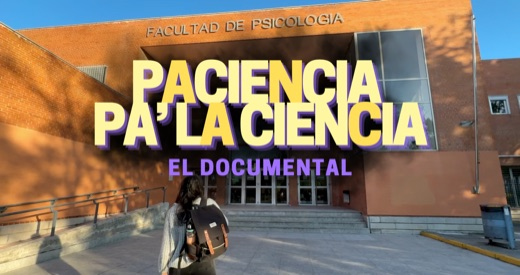
•Elected Representative for Predoctoral Researchers and Early-Career Academic Staff
Represented predoctoral researchers in faculty- and department-level governance bodies, including quality assurance committee.
📍 Faculty of Psychology, Universidad Autónoma de Madrid
•“Psicometries” project - Season 2: Equation Triumph
Streaming contest for Methodology students about psychological research practices and methods
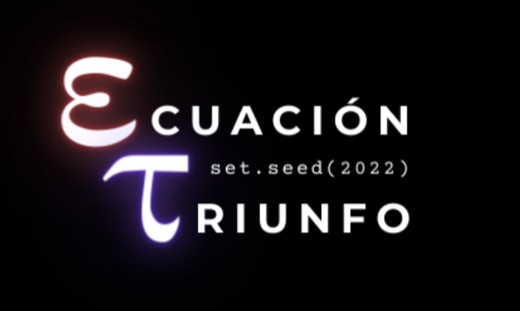
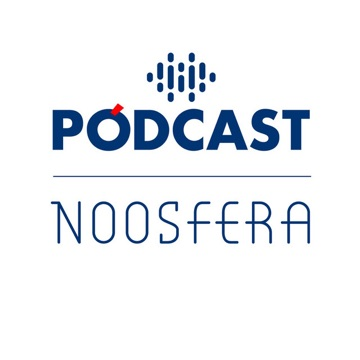
•“Predoc Space” support group
Creation of a support group for PhD students
📍 Faculty of Psychology, Universidad Autónoma de Madrid
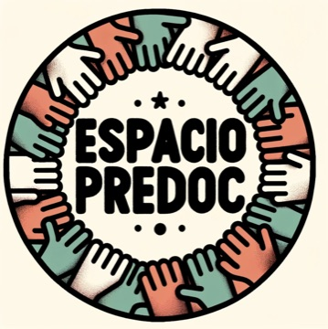
•“Psicometries” project - Season 1
Series of streamings with interviews, reflections, debates, and masterclasses
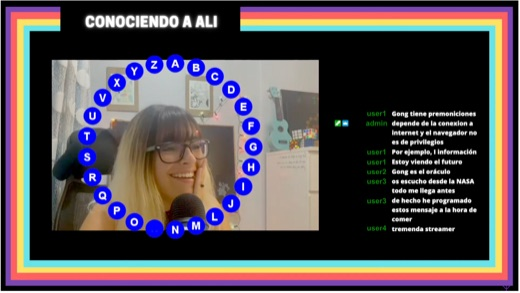
•“The Academic Coffee-maker” support group
Co-creation of a support group for young researchers during the pandemic
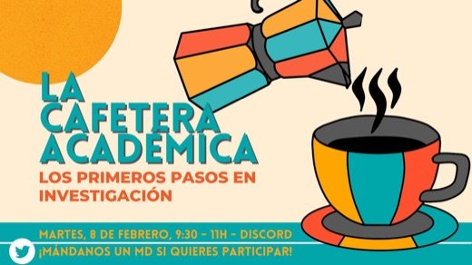
•Workshop: The Young Academy Responds: Leading New Research Groups
La Academia Joven (2h) 📍ONLINE
•Workshop: Open Science
SEPNECA (12h) 📍Madrid, Spain
•Workshop: Open Science for All Audiences: What, How, When, Where, and Why
Doctoral School (4h) 📍Universidad Autónoma de Madrid, Spain
•Workshop: Communicating consciousness science to funders and general public
Association for the Scientific Study of Consciousness (3h) 📍New York, USA
•Workshop: Emotional Management and Planning during the PhD
Doctoral School (10h) 📍Universidad Autónoma de Madrid, Spain
•Workshop: Scientific Writing Workshop, 3rd Edition
Doctoral School (10h) 📍Universidad Autónoma de Madrid, Spain
•Workshop: Annual JAGS Workshop: Bayesian Modeling for Cognitive Science
The International Society for Bayesian Analysis (ISBA) (84h) 📍Universiteit van Amsterdam, NL
•Workshop: Bayesian Structural Equation Modeling in R (BSEM)
MSc in Methodology (1.5h) 📍Universidad Autónoma de Madrid, Spain
•Workshop: Eye-movement recording as a research tool: theoretical and practical
Doctoral School (10h) 📍Universidad Autónoma de Madrid, Spain
•Workshop: Introduction to Python programming
Doctoral School (8h) 📍Universidad Autónoma de Madrid, Spain
•Workshop: Introduction to Exploratory Graph Analysis (EGA) with R
AEMCCO (6h) 📍Universidad de Zaragoza, Teruel, Spain
•Workshop: LaTeX for Students, Engineers, and Scientists
IIT Bombay (28h) 📍edX
•Workshop: Exploratory Structural Equation Modeling (ESEM) with Mplus: From Theory to Practice
AEMCCO (2h) 📍Universidad Autónoma de Madrid, Spain
•Workshop: Introduction to Machine Learning
AEMCCO (4h) 📍Universidad Autónoma de Madrid, Spain
•Workshop: Teaching Data Analysis: Beyond the Recipes
AEMCCO (2h) 📍Teruel, Spain
•Workshop: Digital teaching tools: Blackboard Ultra, enriched digital content and hybrid teaching
Universidad Nebrija (6h) 📍Madrid, Spain
•Quant analyses
Linear mixed models, factor analysis, IRT, SDT, non-linear modeling, Bayesian stats...
•Programming
R, Python (PsychoPy), jsPsych, LaTeX, typst, CSS, html…
•Other skills
Multisite coordination, Open Science
Video edition, Photoshop, Graphic Design.
•Spanish (mother tongue)
•English (C)
•Spanish Sign Language (A1)
•Membership in scientific associations
Current: SIPS, SEPEX, EAM, AEMCCO, AIIDI.
Previous: ASSC
•Peer review
Ad hoc reviewer for Mindfulness (Springer Nature), 2 manuscripts
•Test review
National Tests Commission, Spanish Psychological Association (COP), 2024: psychometric review of the Spanish adaptation of the Copenhagen Psychosocial Questionnaire (CoPsoQ-Istas21)
Nothing found. Try another word.